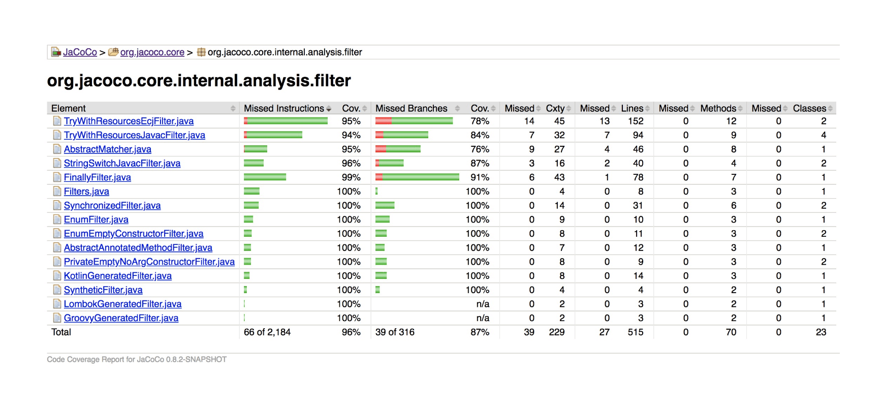
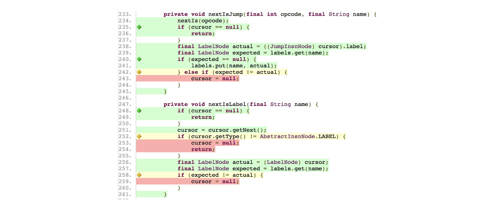
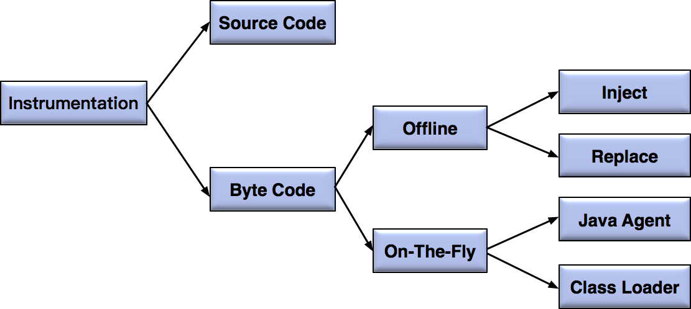

- 00 开篇词 从“小工”到“专家”，我的软件测试修炼之道.md.html
- 01 你真的懂测试吗？从“用户登录”测试谈起.md.html
- 02 如何设计一个“好的”测试用例？.md.html
- 03 什么是单元测试？如何做好单元测试？.md.html
- 04 为什么要做自动化测试？什么样的项目适合做自动化测试？.md.html
- 05 你知道软件开发各阶段都有哪些自动化测试技术吗？.md.html
- 06 你真的懂测试覆盖率吗？.md.html
- 07 如何高效填写软件缺陷报告？.md.html
- 08 以终为始，如何才能做好测试计划？.md.html
- 09 软件测试工程师的核心竞争力是什么？.md.html
- 10 软件测试工程师需要掌握的非测试知识有哪些？.md.html
- 11 互联网产品的测试策略应该如何设计？.md.html
- 12 从0到1：你的第一个GUI自动化测试.md.html
- 13 效率为王：脚本与数据的解耦 + Page Object模型.md.html
- 14 更接近业务的抽象：让自动化测试脚本更好地描述业务.md.html
- 15 过不了的坎：聊聊GUI自动化过程中的测试数据.md.html
- 16 脑洞大开：GUI测试还能这么玩（Page Code Gen + Data Gen + Headless）？.md.html
- 17 精益求精：聊聊提高GUI测试稳定性的关键技术.md.html
- 18 眼前一亮：带你玩转GUI自动化的测试报告.md.html
- 19 真实的战场：如何在大型项目中设计GUI自动化测试策略.md.html
- 20 与时俱进：浅谈移动应用测试方法与思路.md.html
- 21 移动测试神器：带你玩转Appium.md.html
- 22 从0到1：API测试怎么做？常用API测试工具简介.md.html
- 23 知其然知其所以然：聊聊API自动化测试框架的前世今生.md.html
- 24 紧跟时代步伐：微服务模式下API测试要怎么做？.md.html
- 25 不破不立：掌握代码级测试的基本理念与方法.md.html
- 26 深入浅出之静态测试方法.md.html
- 27 深入浅出之动态测试方法.md.html
- 28 带你一起解读不同视角的软件性能与性能指标.md.html
- 29 聊聊性能测试的基本方法与应用领域.md.html
- 30 工欲善其事必先利其器：后端性能测试工具原理与行业常用工具简介.md.html
- 31 工欲善其事必先利其器：前端性能测试工具原理与行业常用工具简介.md.html
- 32 无实例无真相：基于LoadRunner实现企业级服务器端性能测试的实践（上）.md.html
- 33 无实例无真相：基于LoadRunner实现企业级服务器端性能测试的实践（下）.md.html
- 34 站在巨人的肩膀：企业级实际性能测试案例与经验分享.md.html
- 35 如何准备测试数据？.md.html
- 36 浅谈测试数据的痛点.md.html
- 37 测试数据的“银弹”- 统一测试数据平台（上）.md.html
- 38 测试数据的“银弹”- 统一测试数据平台（下）.md.html
- 39 从小作坊到工厂：什么是Selenium Grid？如何搭建Selenium Grid？.md.html
- 40 从小工到专家：聊聊测试执行环境的架构设计（上）.md.html
- 41 从小工到专家：聊聊测试执行环境的架构设计（下）.md.html
- 42 实战：大型全球化电商的测试基础架构设计.md.html
- 43 发挥人的潜能：探索式测试.md.html
- 44 测试先行：测试驱动开发(TDD).md.html
- 45 打蛇打七寸：精准测试.md.html
- 46 安全第一：渗透测试.md.html
- 47 用机器设计测试用例：基于模型的测试.md.html
- 48 优秀的测试工程师为什么要懂大型网站的架构设计？.md.html
- 49 深入浅出网站高性能架构设计.md.html
- 50 深入浅出网站高可用架构设计.md.html
- 51 深入浅出网站伸缩性架构设计.md.html
- 52 深入浅出网站可扩展性架构设计.md.html
- 测试专栏特别放送 浅谈全链路压测.md.html
- 测试专栏特别放送 答疑解惑第一期.md.html
- 测试专栏特别放送 答疑解惑第七期.md.html
- 测试专栏特别放送 答疑解惑第三期.md.html
- 测试专栏特别放送 答疑解惑第二期.md.html
- 测试专栏特别放送 答疑解惑第五期.md.html
- 测试专栏特别放送 答疑解惑第六期.md.html
- 测试专栏特别放送 答疑解惑第四期.md.html
- 结束语 不是结束，而是开始.md.html
- 捐赠
06 你真的懂测试覆盖率吗？
在上一篇文章中，我为你介绍了软件测试各个阶段的自动化技术，在前面的文章中我也提到了测试覆盖率的概念，你当时可能有点不明白，那么今天我就和你详细聊聊测试覆盖率这个主题。
测试覆盖率通常被用来衡量测试的充分性和完整性，从广义的角度来讲，测试覆盖率主要分为两大类，一类是面向项目的需求覆盖率，另一类是更偏向技术的代码覆盖率。
需求覆盖率
需求覆盖率是指测试对需求的覆盖程度，通常的做法是将每一条分解后的软件需求和对应的测试建立一对多的映射关系，最终目标是保证测试可以覆盖每个需求，以保证软件产品的质量。
我们通常采用ALM，Doors和TestLink等需求管理工具来建立需求和测试的对应关系，并以此计算测试覆盖率。
需求覆盖率统计方法属于传统瀑布模型下的软件工程实践，传统瀑布模型追求自上而下地制定计划、分析需求、设计软件、编写代码、测试和运维等，在流程上是重量级的，已经很难适应当今互联网时代下的敏捷开发实践。
所以，互联网测试项目中很少直接基于需求来衡量测试覆盖率，而是将软件需求转换成测试需求，然后基于测试需求再来设计测试点。
因此，现在人们口中的测试覆盖率，通常默认指代码覆盖率，而不是需求覆盖率。
代码覆盖率
简单来说，代码覆盖率是指，至少被执行了一次的条目数占整个条目数的百分比。
如果“条目数”是语句，对应的就是代码行覆盖率；如果“条目数”是函数，对应的就是函数覆盖率；如果“条目数”是路径，那么对应的就是路径覆盖率。依此类推，你就可以得到绝大多数常见的代码覆盖率类型的定义。
这里我给你简单介绍一下最常用的三种代码覆盖率指标。
- 行覆盖率又称为语句覆盖率，指已经被执行到的语句占总可执行语句（不包含类似C++的头文件声明、代码注释、空行等等）的百分比。这是最常用也是要求最低的覆盖率指标。实际项目中通常会结合判定覆盖率或者条件覆盖率一起使用。
- 判定覆盖又称分支覆盖，用以度量程序中每一个判定的分支是否都被测试到了，即代码中每个判断的取真分支和取假分支是否各被覆盖至少各一次。比如，对于if(a>0 && b>0)，就要求覆盖“a>0 && b>0”为TURE和FALSE各一次。
- 条件覆盖是指，判定中的每个条件的可能取值至少满足一次，度量判定中的每个条件的结果TRUE和FALSE是否都被测试到了。比如，对于if(a>0 && b>0)，就要求“a>0”取TRUE和FALSE各一次，同时要求“b>0”取TRUE和FALSE各一次。
代码覆盖率的价值
现在很多项目都在单元测试以及集成测试阶段统计代码覆盖率，但是我想说的是，统计代码覆盖率仅仅是手段，你必须透过现象看到事物的本质，才能从根本上保证软件整体的质量。
统计代码覆盖率的根本目的是找出潜在的遗漏测试用例，并有针对性的进行补充，同时还可以识别出代码中那些由于需求变更等原因造成的不可达的废弃代码。
通常我们希望代码覆盖率越高越好，代码覆盖率越高越能说明你的测试用例设计是充分且完备的，但你也会发现测试的成本会随着代码覆盖率的提高以类似指数级的方式迅速增加。
如果想达到70%的代码覆盖率，你可能只需要30分钟的时间成本。但如果你想把代码覆盖率提高到90%，那么为了这额外的20%，你可能花的时间就远不止30分钟了。更进一步，你如果想达到100%的代码覆盖率，可想而知你花费的代价就会更大了。
那么，为什么代码覆盖率的提高，需要付出越来越大的代价呢？因为在后期，你需要大量的桩代码、Mock代码和全局变量的配合来控制执行路径。
所以，在软件企业中，只有单元测试阶段对代码覆盖率有较高的要求。因为从技术实现上讲，单元测试可以最大化地利用打桩技术来提高覆盖率。而你如果想在集成测试或者是GUI测试阶段将代码覆盖率提高到一定量级，那你所要付出的代价是巨大的，而且在很多情况下根本就实现不了。
代码覆盖率的局限性
我先来问你一个问题，如果你通过努力，已经把某个函数的MC/DC代码覆盖率（MC/DC覆盖率是最高标准的代码覆盖率指标，除了直接关系人生命安全的软件以外，很少会有项目会有严格的MC/DC覆盖率要求）做到了100%，软件质量是否就真的高枕无忧、万无一失了呢？
很不幸，即使你所设计的测试用例已经达到100%的代码覆盖率，软件产品的质量也做不到万无一失。其根本原因在于代码覆盖率的计算是基于现有代码的，并不能发现那些“未考虑某些输入”以及“未处理某些情况”形成的缺陷。
我给你举个极端的例子，如果一个被测函数里面只有一行代码，只要这个函数被调用过了，那么衡量这一行代码质量的所有覆盖率指标都会是100%，但是这个函数是否真正实现了应该需要实现的功能呢？
显然，代码覆盖率反映的仅仅是已有代码的哪些逻辑被执行过了，哪些逻辑还没有被执行过。以此为依据，你可以补充测试用例，可以去测试那些还没有覆盖到的执行路径。但也是仅此而已，对于那些压根还没有代码实现的部分，基于代码覆盖率的统计指标就无能为力了。
总结来讲，高的代码覆盖率不一定能保证软件的质量，但是低的代码覆盖率一定不能能保证软件的质量。
好了，现在你已经了解了代码覆盖率的概念、价值和局限性，那么接下来，我就以Java代码覆盖率工具为例，给你解释一下代码覆盖率工具的内部实现原理以及一些关键技术。
当你理解了这部分内容，以后再面对各个不同开发语言的不同代码覆盖率工具时，就可以做到胸有成竹地根据具体的项目性质，选择最合适的代码覆盖率工具了。
代码覆盖率工具
JaCoCo是一款Java代码的主流开源覆盖率工具，可以很方便地嵌入到Ant、Maven中，并且和很多主流的持续集成工具以及代码静态检查工具，比如Jekins和Sonar等，都有很好的集成。
首先，我先带你看看JaCoCo的代码覆盖率报告长什么样子。
如图1所示为JaCoCo的整体代码覆盖率统计报告，包括了每个Java代码文件的行覆盖率以及分支覆盖率统计，并给出了每个Java代码文件的行数、方法数和类数等具体信息。
- 图1 JaCoCo代码覆盖率统计报告实例
如图2所示为每个Java文件内部详细的代码覆盖率情况，图中绿色的行表示已经被覆盖，红色的行表示尚未被覆盖，黄色的行表示部分覆盖；左侧绿色菱形块表示该分支已经被完全覆盖、黄色菱形块表示该分支仅被部分覆盖。

图2 JaCoCo详细代码覆盖率实例
显然，通过这个详尽的报告，你就可以知道代码真实的执行情况、哪些代码未被覆盖。以此为基础，你再去设计测试用例就会更有针对性了。
代码覆盖率工具的实现原理
JaCoCo的详细报告，让你惊叹于代码覆盖率工具的强大。但你有没有仔细想过，这样的统计信息如何被获取到的呢？
- 图3 统计代码覆盖率的不同注入实现技术
实现代码覆盖率的统计，最基本的方法就是注入（Instrumentation）。简单地说，注入就是在被测代码中自动插入用于覆盖率统计的探针（Probe）代码，并保证插入的探针代码不会给原代码带来任何影响。
对于Java代码来讲，根据注入目标的不同，可以分为源代码（Source Code）注入和字节码（Byte Code）注入两大类。基于JVM本身特性以及执行效率的原因，目前主流的工具基本都是使用字节码注入，注入的具体实现采用ASM技术。
ASM是一个Java字节码操纵框架，能被用来动态生成类或者增强既有类的功能，可以直接产生 class 文件，也可以在类被加载入JVM之前动态改变类行为。
根据注入发生的时间点，字节码注入又可以分为两大模式：On-The-Fly注入模式和Offline注入模式。
第一，On-The-Fly注入模式
On-The-Fly模式的特点在于无需修改源代码，也无需提前进行字节码插桩。它适用于支持Java Agent的运行环境。
这样做的优点是，可以在系统不停机的情况下，实时收集代码覆盖率信息。缺点是运行环境必须允许使用Java Agent。
实现On-The-Fly模式，主要有两种技术方案：
开发自定义的类装载器（Class Loader）实现类装载策略，每次类加载前，需要在class文件中插入探针，早期的Emma就是使用这种方案实现的探针插入；
借助Java Agent，利用执行在main()方法之前的拦截器方法premain()来插入探针，实际使用过程中需要在JVM的启动参数中添加“-javaagent”并指定用于实时字节码注入的代理程序，这样代理程序在装载每个class文件前，先判断是否已经插入了探针，如果没有则需要将探针插入class文件中，目前主流的JaCoCo就是使用了这个方式。
第二，Offline注入模式
Offline模式也无需修改源代码，但是需要在测试开始之前先对文件进行插桩，并事先生成插过桩的class文件。它适用于不支持Java Agent的运行环境，以及无法使用自定义类装载器的场景。
这样做的优点是，JVM启动时不再需要使用Java Agent额外开启代理，缺点是无法实时获取代码覆盖率信息，只能在系统停机时下获取。
Offline模式根据是生成新的class文件还是直接修改原class文件，又可以分为Replace和Inject两种不同模式。
和On-The-Fly注入模式不同，Replace和Inject的实现是，在测试运行前就已经通过ASM将探针插入了class文件，而在测试的运行过程中不需要任何额外的处理。Cobertura就是使用Offline模式的典型代表。
总结
测试覆盖率通常被用来衡量测试的充分性和完整性，包括面向项目的需求覆盖率和更偏向技术的代码覆盖率。而需求覆盖率的统计方式不再适用于现在的敏捷开发模式，所以现在谈到测试覆盖率，大多是指代码覆盖率。
但是，高的代码覆盖率不一定能保证软件的质量，因为代码覆盖率是基于现有代码，无法发现那些“未考虑某些输入”以及“未处理某些情况”形成的缺陷。
另外，对于代码覆盖率的统计工具，我希望你不仅仅是会用的层次，而是能够理解它们的原理，知其然知其所以然，才能更好地利用这些工具完成你的测试工作。
思考题
你在实际工作中，是否还接触过C/C++，JavaScript等语言的代码覆盖率工具，比如GCC Coverage、JSCoverage和Istanbul等？如果接触过的话，请你谈谈自己使用的感受以及遇到过的“坑”。
欢迎你给我留言。
© 2019 - 2023 Liangliang Lee. Powered by gin and hexo-theme-book.